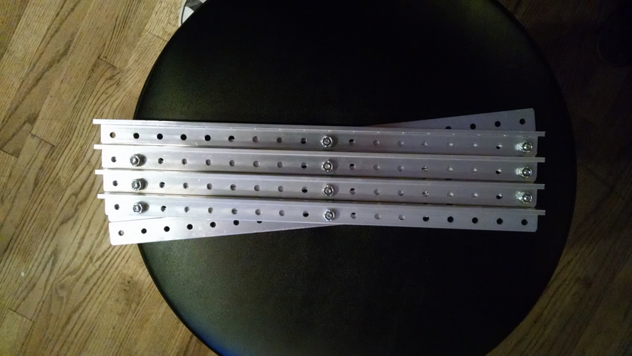
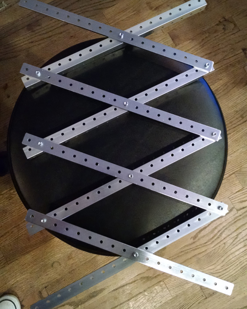

Written by Jayesh

Task: Scissor Lift for New Scoring mechanism
Our method for elevating the platform for optimum height has been decided. A simple scissor-based design with support on either side seems the best option. Supporting each opposite side
and also lifting the platform, the scissor lift is efficient, and with the added support of the center beam, should stay stable long enough for the robot to score each consequent ball.
The "scissor" has been measured to have an optimal angle (For the greatest stability). During the process of testing the scissor beams, we found that having longer beams to occupy the
same length of space helps stabilize and make the two sides lift the platform at a quicker space. With our measured optimal degree of 80 and a change from approximately 1 foot beams to
1.5 feet.
Reflections:
As with our previous tube design, we have a simple,efficient algorithm that works with a simple on/off toggle. Concerning the base lift, we have the needed parts and the basic design will
basically a flat piece with a motor system elevating it. Now our problem is the actual placement of the scissor lift.
